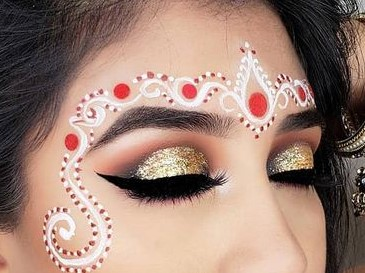

What are the latest bridal makeup trends for Odia brides in 2025?
Posted on June 9, 2025 by Smita

As an Odia bridal artist who's painted thousands of smiles across Rayagada, Bhubaneswar, and Cuttack, I've seen our bridal traditions evolve beautifully. The 2025 Odia bride celebrates our heritage while embracing modern elegance - think luminous skin instead of heavy coverage, and delicate gold accents rather than stark white chandan. After creating looks for brides from Koraput to Ganjam, I'm thrilled to share what's making Odia brides glow this season!
Table of Contents
Key Takeaway
The 2025 Odia bride blends heritage with contemporary elegance. Modern chandan details, skin-first luminosity, and sophisticated red lips create looks that honor tradition while celebrating individuality. Remember - your bridal glow starts with skincare months before the wedding!
Top 5 Odia Bridal Trends for 2025
Based on my work with brides across Odisha, these are the looks dominating wedding mandaps this season:
1. The Luminous Canvas
Why Odia brides love it: Perfect for our humid climate! Replaces heavy makeup with dewy, breathable radiance that lasts through haldi ceremonies and evening receptions.
Pro tips from my kit:
- Prep: Odia bridal secret - rub ice cubes wrapped in muslin cloth morning-of to minimize pores
- Foundation: NARS Light Reflecting Foundation (buildable for temple ceremonies)
- Highlight: Mix liquid highlighter with moisturizer for all-over glow
- Local find: Chandrika ubtan as gentle exfoliator weeks before
2. Modern Chandan Eyes

Why Odia brides love it: A fresh take on our sacred white chandan dots - now delicate pearl motifs tracing the lashline
Pro tips from my kit:
- Use Kay Beauty's white kajal for precise dots
- Pair with gold leaf shadow (Swiss Beauty's HD palette works beautifully)
- Pro tip: Apply dots AFTER false lashes to avoid displacement
- Traditional touch: Add tiny chandan dot at hair parting
3. Pastel Huescape Accents
Why Odia brides love it: Soft pinks and lilacs complement our traditional red-gold bridal palette beautifully
Pro tips from my kit:
- Blend peach blush upwards towards temples ("Odia draping technique")
- Use pastel eyeshadow as inner corner highlight
- Local gem: Mix sindoor with clear gloss for custom blush
4. Satin Siren Lips
Why Odia brides love it: Comfortable, kiss-proof color that doesn't dry out lips during long ceremonies
Pro tips from my kit:
- Blue-based reds for fair complexions (Maybelline Pioneer)
- Berry reds for medium skin (Nykaa Chai)
- Terracotta reds for deeper tones (Swiss Beauty Date Night)
- Secret trick: Outline lips with sindoor powder before lipstick for longevity
5. Golden Aura Highlighting
Why Odia brides love it: Enhances our traditional gold jewelry with strategic illumination
Pro tips from my kit:
- Focus on cheekbones, brow bones and collarbones
- Use cream formulas that withstand Odisha humidity
- Local solution: Mix gold eye shadow with coconut oil as body highlighter
Bhubaneswar's Top Odia Bridal Artists
After collaborating with artists across Odisha, these Bhubaneswar specialists excel at blending tradition with contemporary trends:
Pro Tip: When choosing your artist:
- Ask to see Odia-specific portfolio work
- Ensure they understand regional ceremony timelines
- Confirm they use humidity-proof products
- Check if they provide traditional chandan application
Skincare Secrets for Odia Brides
Having prepared brides across Odisha's diverse climates, here's my essential timeline:
Odia Bride Skincare Timeline
- 6 Months Before: Start Chandrika ubtan weekly scrubs
- 3 Months Before: Add coconut oil massage for hair/body
- 1 Month Before: Professional facial focusing on hydration
- 1 Week Before: Daily rosewater misting
- Wedding Morning: Ice facial massage to depuff
Climate-Specific Tips:
- Coastal (Ganjam/Puri): Light gel moisturizers + matte primers
- Western (Rayagada/Koraput): Rich creams + humidifying masks
- Urban (Bhubaneswar/Cuttack): Pollution-defense serums
Pro tip from my Rayagada brides: Apply fresh aloe vera gel nightly 2 weeks pre-wedding!
Finding Your Perfect Red Lipstick
Choosing the right red is a ritual I guide every Odia bride through:
Red Lipstick Selection Guide
Fair Skin: Blue-based reds (Ruby Woo)
Medium Skin: True crimson reds
Deep Skin: Berry-wine reds
All Skin Tones: Satin finishes > matte
Odia Bridal Pro Tips:
- Test colors with your actual wedding jewelry
- Choose transfer-proof formulas for cheek kisses
- Match undertones to your saree's red (cool/warm)
- Local favorite: Mix MAC Ruby Woo with ghee for custom stain
At my Rayagada studio, we host "Red Trials" where brides test lipsticks with actual wedding jewelry!
Traditional vs Modern Odia Makeup
Having created both styles for brides across Odisha, here's how traditions are evolving:
| Feature | Traditional Odia | Modern Odia (2025) |
|---|---|---|
| Skin Finish | Full matte coverage | Luminous, skin-like glow |
| Chandan | Thick white dots/lines | Pearl-accented delicate motifs |
| Eyes | Bold black kohl rim | Soft smokey gold definition |
| Lips | Bright matte red | Satin berry-reds |
| Highlight | Minimal | Golden strategic glow |
Why modern brides choose this: "I wanted to honor our traditions without feeling masked" - Priyanka, recent Bhubaneswar bride
Embrace Your Odia Bridal Beauty
Having adorned brides from the temples of Puri to modern Bhubaneswar venues, I believe your wedding look should feel authentically you. The 2025 trends beautifully bridge our Odia heritage with contemporary elegance - whether you choose delicate pearl chandan or a modern satin red lip.
Remember what my Rayagada grandmother taught me: "A bride's radiance comes from her joy, not just her makeup." So embrace these trends as tools to enhance your natural beauty, not mask it.
At Smita's Glam World, we specialize in Odia bridal transformations across Odisha. Book a consultation to create your personalized bridal look that honors tradition while celebrating your unique beauty!
Final Thought
Your wedding marks the beginning of your marriage journey. However you choose to adorn yourself - whether with traditional chandan or modern highlights - what truly matters is the love you're celebrating. May your special day be filled with the same warmth and beauty that defines our Odia culture!